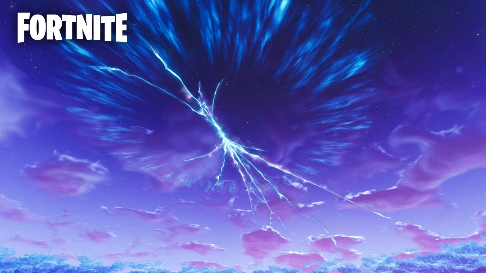
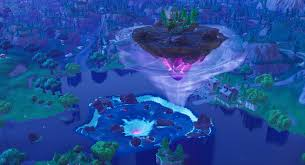

Bon bon bon Nous voici aux Évenement ... Prêt ? moi je suis prêt
Nous allons parlé dans un premier temps de L'Évenement de la saison 4 (je parle du chapitre 1 pas du 2)
Alors le premier vrai evenement de fortnite c'est deroulé sur l'ancienne map (allez voir dans la catégories Map pour voir de quoi je parle) prés de Snobby Shores
ça c'est passé dans un batiment dans la montagne qui etait juste à gauche de Snobby Shores Pour l'histoire de cette saison : c'etait une scéne de film qui c'etait passé
un peu partout sur la map mais au début de cette saison il y a eu une météorite qui c'est crasher sur la ville (ou entrepot si vous voulez) de Dusty Depot et des
"scientifiques" ont été étudié un rocher spécial qui été dans la météorite mais par le grande étonnement ils trouverent quelqu'un qui etait dans une sorte de capsules
dans le rocher on le surnommé "le visiteur" aprés c'être enfuit dans le batiment à coté de Snobby (qui était une sorte de base pour le film mais ce n'était pas une vrai)
il fesat de cette "base" une base opérationnel pour crée une fusée (Au début je croyais que cette fusée allé détruire la map) pour rentré chez lui . Au lancement de la fusée
(Donc à l'Évenement) La plupart des joueurs ont essayé d'aller sur la fusée (j'ai essayé aussi mais j'ai vu personne réussir à allé dessus) bref, cette fusée décola
et ce diriga vers le ciel mais ça tentatif échoua car une sorte de faille l'empécha de passé donc il rééssaya et il réussit mais en laissant une grosse faille derrier lui
Voici à quoi ressembler cette faille.

Voilà pour Cette saison ( je parle pas de la saison 2 et 3 car je sais pas de quoi parler de ces deux saisons)
La Saison 5 : Aprés le départ du visiteur la faille a fait disparaitre et a fait réapparaitre des objets (comme la tomate de Tomato Town) mais la faille devennas
de plus en plus petite au fil des jours (Petite préscision : Il y a eu l'arrivé d'une nouvelle ville dans un dessert du nom de Paradys Palm cela aura son importance)
Mais un jour la faille été entrain de disparaitre MAIS (Vous en avez surrement marre de mes "mais" ) la faille laissa derniére elle un cube de couleur violet
Qui quand on lui tire dessus nous eject avec des éclairs qui sort du cube et quand on saute dessus,on rebondit. Á l'apparition du cube (Vous en entenderez beaucoup parlé de ce cube)
au début il resta immobile dans le dessert mais un jour tout un coup il bouga et avança autour de la map (cela prennait quelque semaines je sais plus combien) en avancant
il laissa des marques (qui était aussi sur le cube) mais on en parleras de ça un petit peu plus tard . vers la fin de la saison , le cube arriva eu lac de Loot Lake
(Encore une fois, la map se trouve dans la catégories Map) et le cube avança dans l'eau et se dissout et transformat le lac en tranpoline (maintenant le lac s'etait le cube)
Il resta comme ça jusqu'à la fin de la saison
Maintenant Voici La saison 6 qui ne m'a pas trop plus mais voilà voilà
Saison 6 : Aprés c'être dissout dans le lac le cube refait son apparition mais en volant (oui oui en volant) en prennant la petite maison qui etait dans le lac
Le lac avait repris sa couleur et n'était plus un tranpoline (dommage j'aimais bien ce tranpoline mais bref) pendant quelque semaine le cube ne bouga pas puis il commença
à bougé vers les marques (ça vous dit quelque chose ? si non aller revoir le texte de la saison 5)les marques flotaient dans les airs (Toutes) puis revennat au millieu du lac
. le cube devennait fisuré et tourna sur lui même de plus en plus vite et puis un jour , il explosa (lui et la petite île qui a pris avec lui) il laissa derriére lui
des morceaux du cube qui laissa poucé des plantes (me demandez pas pourquoi j'en sais rien peut être que ce cube est jardinnier)puis les marques qui flottaint tombérent
et fesairent un dôme qui quand on entre dedans en sautant tu flottais (comme si t'était sur la lune mais en allant plus haut enfin je crois ... j'ai jamais été sur la lune)
Conclusion : le cube est détruite
